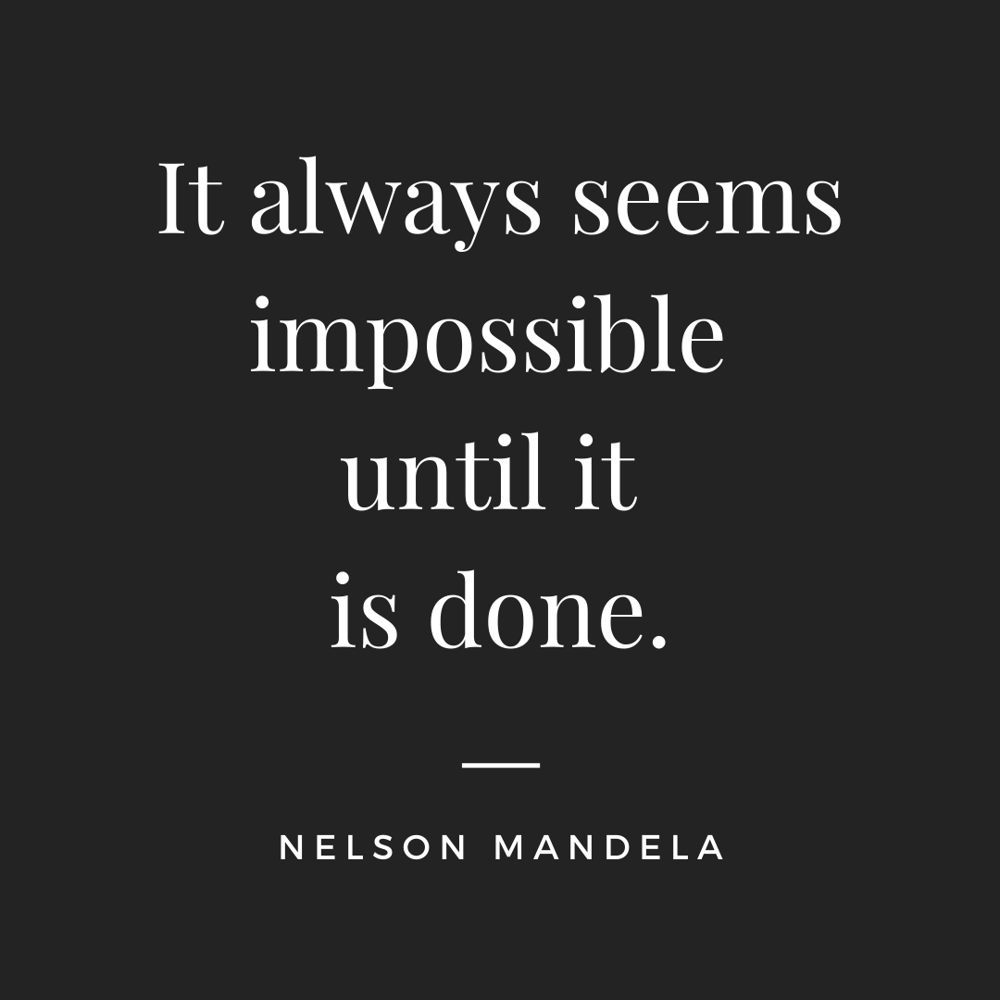

Content Strategy 101
In the digital world, there is a lot of noise – and the key to a successful online strategy is to stand out by producing content that provides value. Is the content trustworthy? Does it provide tangible solutions? Does it empathize with the audience? Not only does your audience (human beings) ask this, but so do search engines (Google, Bing, Yahoo). So, what is content exactly? According to Kristina Halvorson, the CEO & founder of Brain Traffic and a Content Strategy Expert, Content is the entire user experience. The user experience for digital marketing is the medium (blog, website, social media channel) the message, and the visuals (photos, graphics, videos). All of this – must fit together cohesively to promote reach and engagement.
Value-Added content speaks for itself
For Instagram in particular, it takes the same amount of energy to hit the “like” button as it does to hit the “save” button. Which type of engagement do you think is the more meaningful? (Think about the difference between the two)
A post “save” is the correct response. This tells Instagram that the information was so valuable, that users want to refer back to it. The more relevant your content is, the more it will be shared to your audience, and the more authority your account will have on the platform.
For your website, a visitor that stays longer than 30 seconds is considered a conversion. Even if the person doesn’t reach out to call or send you an email, the fact that they have stayed on your website for several minutes (low bounce rate) tells search engines that your website provides valuable, and trustworthy information.
Conversion + Low Bounce Rate = Higher Authority
So how do we create this high quality content that encourages users to save your posts and hangout on your website? This formula, according to Ann Handley in "Everybody Writes" sets the framework for high quality content.
Utility x Inspiration x Empathy = Quality Content
- Utility is defined as providing content that helps your consumer, whether it is providing moving tips, helping them decide whether or not they should sell their home first and then buy, etc. You are helping your audience make decisions.
- Is your content inspired by your experience or data? This includes factual information from your work in the field and market trends. AND it also feels like it can only come from you. This type of content can position you as a subject matter expert in your field. Examples of this are writing your own thought piece on home buying and selling (especially in this market with the Amazon hype), downsizing, how to make updates to historic homes (permits, etc.), spring real estate market predictions, and analyzing trends in the market (McEnearney does this with the Market in Minute Report, Absorption Rates, Weekly Meter Graphics, and the Second Half Real Estate Market Report).
- Your content is consumer-focused. Your goal is to put your audience first and to also put yourself in their shoes. If you are a new home buyer, what questions would you ask? What if you are new to the area and don't even know where to start looking for a home? Should someone rent or buy? Should someone waive a home inspection in "x" situation? Pay over list price during the Amazon craze? There are many questions people have about real estate. By putting yourself in your audience's shoes, and thinking about what your audience may need help with and then providing them with solutions-oriented content, you are showing them empathy.
It is crucial to your digital marketing strategy to create content that is smart and provides solutions. Because…
The Best Brands Solve Problems
From renting and selling homes, to answering the phone at the duty desk – you as a real estate agent (yes, you!) solve problems each day in your profession. Buyers, sellers, tenants, landlords come to you – the real estate agent, (aka problem solver) for the answers. Think about what you do – and keep track of it. What questions did your clients have or what issues have come up today? If your clients are asking these questions, someone else may have them too, and instead of reaching out to a Realtor, 90% of home buyers hit up Google first. The best way to tackle this is to position yourself as a knowledgeable professional by providing value driven, empathetic, solutions-oriented content. This strategy will always keep your brand relevant and increases the chance of engagement. (no matter what the latest social media craze and Google algorithm update is). Which is exactly what you want!
Most Recent
Facebook Advertising for the Win
Instagram Stories: How tos
TikTok: The Scoop on the Newest Platform
Facebook Organic Reach
Reach vs. Engagement
Instagram Lead Generation
New Year, New Content

